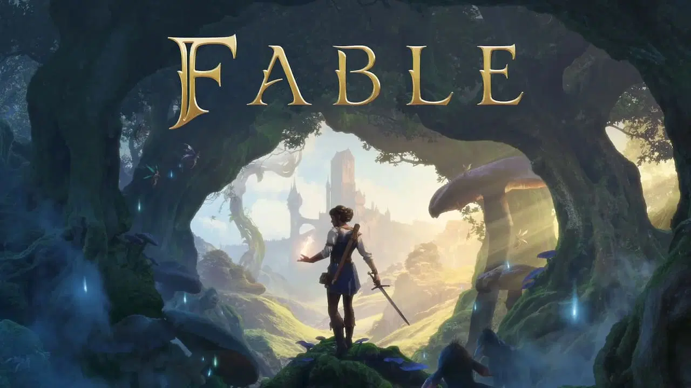
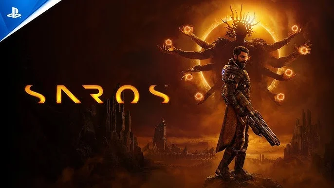
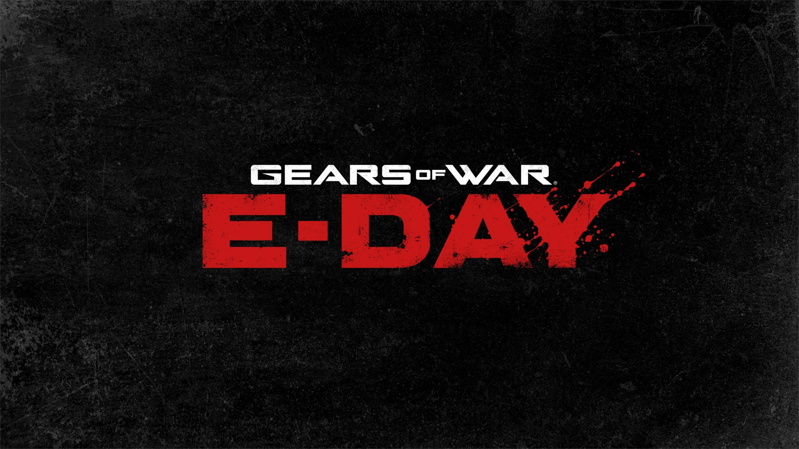
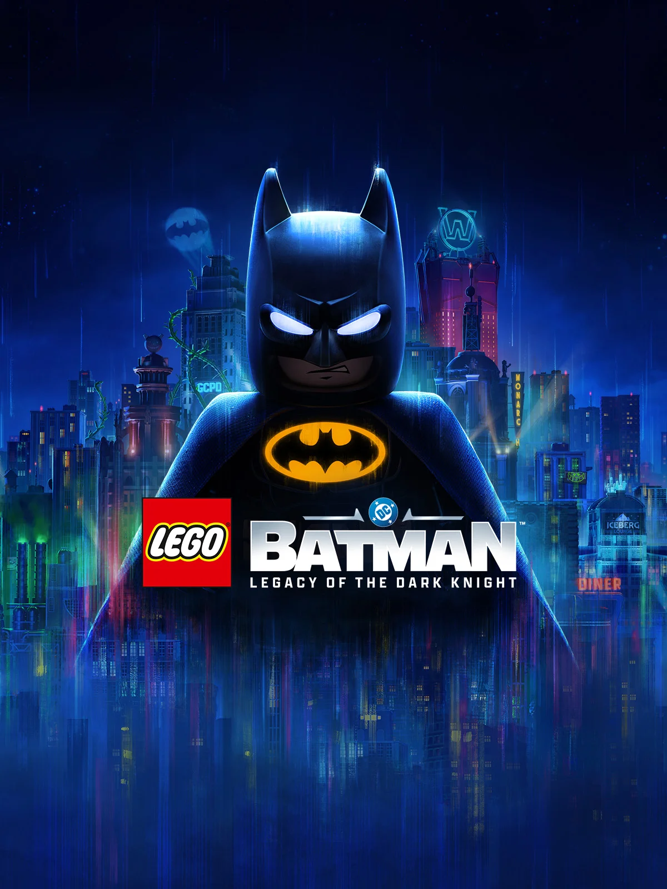
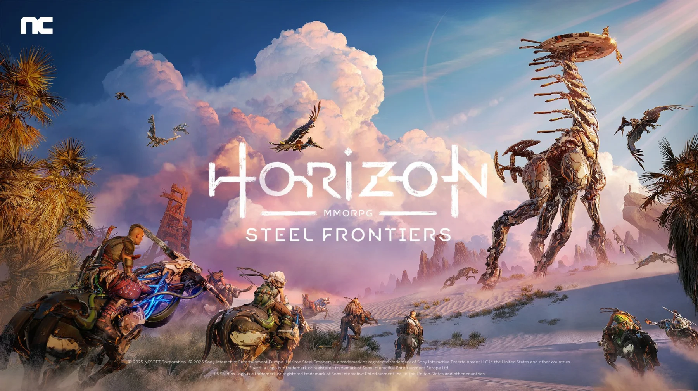
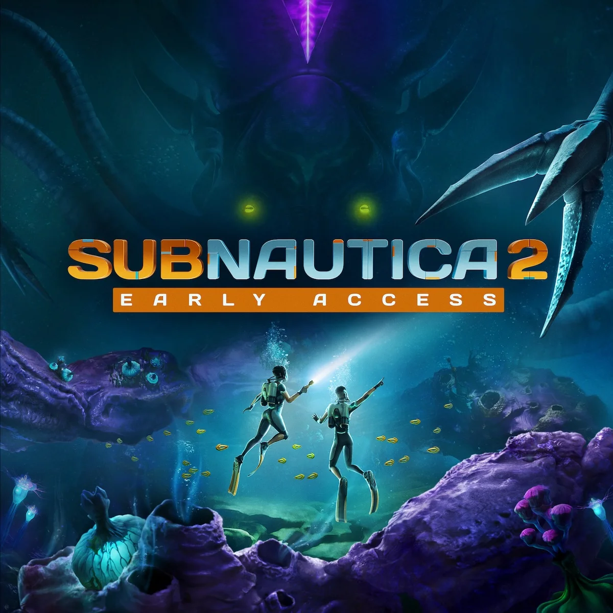

Proximos lanzamientos

GTA VI
¡GTA VI está a punto de llegar y va a sacudir por completo el mundo de los videojuegos! Con un mundo abierto más vivo que nunca, una historia poderosa y tecnología que parece de otra generación, Rockstar promete cambiar las reglas del juego otra vez. ¡Prepárate para un antes y un después en la historia de los videojuegos!
19 de noviembre de 2026

Fable (Reboot)
Fable regresa, Albion vuelve a cobrar vida con ciudades vibrantes, bosques mágicos y criaturas fantásticas que esperan ser descubiertas. Podrás forjar tu propio destino, ya sea como héroe legendario, villano temido o algo intermedio, mientras tus decisiones cambian el mundo que te rodea.
2026 (Por determinar)

Pragmata
Pragmata, una misteriosa aventura de ciencia ficción ambientada en una estación lunar abandonada. Un astronauta y una enigmática niña androide deberán cooperar para sobrevivir en un entorno controlado por una IA hostil. Exploración, puzles y acción se mezclan en un viaje lleno de tecnología futurista, secretos y momentos emotivos.
17 de abril de 2026

Saros
Saros nos lleva a un planeta alienígena tan impresionante como peligroso. Tras un aterrizaje forzoso, deberás explorar paisajes desconocidos, enfrentarte a criaturas hostiles y descubrir los restos de una civilización perdida. Cada intento y cada combate te harán más fuerte mientras desentrañas los misterios que esconde este mundo.
30 de abril de 2026

Phantom Blade Zero
Phantom Blade Zero nos sumerge en una oscura fantasía inspirada en el wuxia, donde la velocidad y la precisión lo son todo. Controlas a Soul, un asesino de élite acusado injustamente y condenado a morir en pocos días. En una carrera contra el tiempo deberás enfrentarte a enemigos letales, dominar combates rápidos y espectaculares, y descubrir la conspiración que selló tu destino.
8 de septiembre de 2026

Gears of War: E-Day
Gears of War: E-Day nos transporta al inicio del desastre que cambió el destino de la humanidad. Marcus Fenix y Dom Santiago luchan por sobrevivir cuando las hordas Locust emergen del subsuelo y arrasan ciudades enteras. Con combates brutales, acción intensa y una historia cargada de emoción, este capítulo muestra el origen de la guerra más devastadora de la saga.
2026 (Por determinar)

LEGO Batman: Legacy of The Dark Knight
LEGO Batman: Legacy of the Dark Knight es un videojuego de acción y aventura en mundo abierto que invita al jugador a embarcarse en el viaje épico que emprende Bruce Wayne desde que comienza hasta que se convierte en el héroe de Gotham City.
29 de mayo de 2026

Horizon Steel Frontiers
Horizon Steel Frontiers se presenta como el primer MMORPG del universo Horizon, un juego de supervivencia, acción y ciencia ficción multijugador ambientado las vastas y peligrosas Deadlands que conocimientos en el videojuego de PlatStation, donde los jugadores pueden crear y personalizar a su propio cazador de máquinas.
2026 (Por determinar)

Subnautica 2
Subnautica 2 es una es un videojuego de aventura y supervivencia en un mundo oceánico alienígena. Sin embargo, algo parece ir mal, la IA de la nave insiste en que continúes con la misión, pero este mundo parece ser demasiado peligroso para la vida humana, a menos que cambies lo que significa ser humano.
2026 (Por determinar)